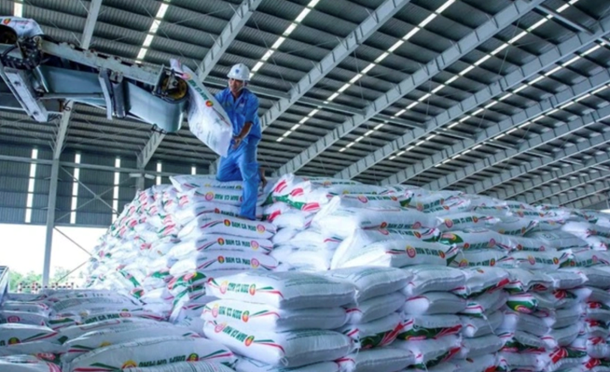

Mỹ – Iran đạt thỏa thuận về ngừng bắn, mở cửa eo biển Hormuz trong hai tuần
Mỹ và Iran đồng ý ngừng bắn trong hai tuần, Tehran sẽ cho phép tàu thuyền đi qua eo biển Hormuz trong thời gian này "với sự điều phối từ lực lượng vũ trăng".
Báo cáo mới nhất của Bộ Nông nghiệp và Môi trường cho thấy, giá phân bón bật tăng rõ rệt từ tháng 3. Ở miền Nam, DAP là mặt hàng tăng mạnh nhất khi DAP Hàn Quốc lên 1,13 triệu đồng một bao (50 kg), tăng 50.000 đồng so với bình quân hai tháng đầu năm. Một số dòng NPK như Cò Bay; Cò Vàng cũng tăng tương tự, lên lần lượt 870.000 và 785.000 đồng một bao. Trong khi đó, nhóm tăng nhẹ gồm DAP Trung Quốc đạt 886.000 đồng một bao, urê Phú Mỹ 553.100 đồng và NPK quốc tế 1,193 triệu đồng một bao, với mức tăng phổ biến 1.000-3.000 đồng.
Tính chung quý I, mặt bằng giá phân bón tăng mạnh so với cùng kỳ. DAP Trung Quốc tăng khoảng 11%, NPK quốc tế tăng 8%, trong khi urê Trung Quốc tăng khoảng 5%.

Trên thị trường thế giới, theo khảo sát của DTN - đơn vị chuyên theo dõi thị trường nông nghiệp toàn cầu, giá cả 8 loại phân bón chủ lực đều tăng so với tháng 2. UAN28 tăng mạnh nhất (13%), urê tăng 12% lên 674 USD một tấn, trong khi urê khan vượt mốc 900 USD một tấn - cao nhất kể từ tháng 5/2023. So với cùng kỳ, nhiều mặt hàng tăng mạnh quanh mức 11-31%. Áp lực chi phí đang lan rộng trong toàn ngành, đặc biệt dưới tác động của giá năng lượng. Giá phân bón chịu ảnh hưởng trực tiếp từ biến động giá dầu - đầu vào quan trọng của sản xuất và vận chuyển.
Chia sẻ gần đây, ông Vũ Đình Tuấn, đại diện Công ty cổ phần Phân bón Dầu khí Cà Mau, cho biết chi phí đầu vào tăng mạnh theo giá dầu, trong khi chi phí logistics quốc tế tăng 20-30% và trong nước tăng 15-20%. "Cứ mỗi 10 USD giá dầu tăng, chi phí doanh nghiệp có thể đội thêm khoảng 525 tỷ đồng", ông nói. Để ứng phó, các doanh nghiệp duy trì nhà máy ở công suất cao nhằm tối ưu chi phí, đồng thời đàm phán với đối tác vận chuyển để kiểm soát logistics. Khi nhu cầu nội địa suy yếu, xuất khẩu urê và NPK được đẩy mạnh để giữ công suất và dòng tiền. Ngành cũng kiến nghị giảm thuế xuất khẩu phân bón từ 5% xuống 0% nhằm tăng sức cạnh tranh.
Không chỉ phân bón, giá thức ăn chăn nuôi cũng leo thang khi chi phí nguyên liệu và vận chuyển tăng. Việt Nam vẫn phụ thuộc lớn vào nhập khẩu các nguyên liệu như ngô, đậu tương, lúa mì, khiến giá trong nước nhạy cảm với biến động quốc tế. Từ đầu năm, nhiều doanh nghiệp đã điều chỉnh tăng giá thức ăn chăn nuôi thêm 100-300 đồng mỗi kg. Sang tháng 3, đà tăng rõ hơn khi tại một số địa phương như An Giang, giá tiếp tục nhích thêm 7.000-12.000 đồng mỗi bao (25-40 kg).
Hiện giá thức ăn cho heo con khoảng 480.000 đồng một bao (25 kg), heo thịt 360.000-370.000 đồng, trong khi thức ăn gia cầm phổ biến 260.000-370.000 đồng. So với trước đó, mặt bằng giá đã tăng khoảng 2-5%, tùy loại sản phẩm. Theo cơ quan chức năng, chi phí đầu vào tăng đang gây áp lực lớn lên người chăn nuôi và nông dân, trong bối cảnh giá đầu ra chưa tăng tương ứng, làm co hẹp biên lợi nhuận và tiềm ẩn nguy cơ lan sang giá thực phẩm.

Mỹ và Iran đồng ý ngừng bắn trong hai tuần, Tehran sẽ cho phép tàu thuyền đi qua eo biển Hormuz trong thời gian này "với sự điều phối từ lực lượng vũ trăng".

Người dân Iran tập trung trên đường phố Tehran, vậy có và hô khẩu hiệu sau khi lệnh ngừng bắn hai tuần với Mỹ được công bố.

Nằm ở bộ nam eo biển Hormuz, cách Iran gần 34 km, bán đảo Musandam của Oman đang chứng kiến những hệ lụy về kinh tế và đời sống khi xung đột bùng phát.